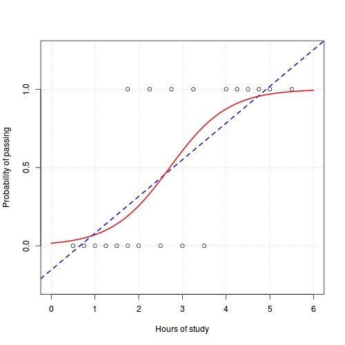

Consider for example binary 0/1 or yes/no response data.
The link function lets us constrain results to an interval.

Logistic versus a linear fit for Wikipedia study-hours example.
x=c(0.5,0.75,1,1.25,1.5,1.75,1.75,2,2.25,2.5,2.75,
3,3.25,3.5,4,4.25,4.5,4.75,5,5.5)
y=c(0,0,0,0,0,0,1,0,1,0,1,0,1,0,1,1,1,1,1,1)
plot(x,y,xlab="Hours of study",
ylab="Probability of passing")
grid()
abline(coef(lm.fit(cbind(1, x), y)), col=4, lty=2)
l = coef(glm.fit(cbind(1, x), y, family=binomial()))
xx = seq(0, 6, length.out=100)
p = 1/(1 + exp(-(l[2]*xx + l[1])))
lines(xx, p, col=2, lwd=2)
https://en.wikipedia.org/wiki/Logistic_regression
In practice, the probability distributions of the random component are limited
to the exponential family of distributions.
That makes a lot of the GLM implementation details simpler.
It was Fisher who first formulated this idea in 1935. Nelder came up with the
name 'generalized linear model' in 1972.
Nelder and Peter McCullagh wrote the seminal book Generalized Linear Models in 1983.
P. J. Green, Wedderburn, Cox, Breslow, and others made important extensions beyond the basic
exponential family and to cover survival analysis and other related linear models.
Ross Ihaka, Brian Ripley and others implemented the Nelder-McCullagh and other ideas carefully in R's
glm family of routines.
How does R solve generalized linear models?
How does R solve generalized linear models?
Using a variation of Newton's method (nonlinear part)...
and a special QR decomposition (linear part).
The gist of solving GLMs.
Formulate a minimum deviance residual problem (a nonlinear version of least squares that corresponds to a maximum likelihood solution).
Minimizing the deviance residual is a nonlinear least squares problem. Calculus!
Find where the first derivative is zero and iterate -- Gradient descent.
Alternatively use a quasi-Newton solver.
Use a quadratic approximation (1st and 2nd derivatives) -- Newton's method.
Green, Nelder, McCullagh noticed that in special cases Newton's method is a weighted least squares problem -- IRWLS.
(IRWLS = iteratively re-weighted least squares)
What R does
Always applies IRWLS (probably OK).
Use a specially-modified rank-revealing QR to solve the approximate linear problem in each step.
irls_basic =
function(X, y, family=binomial(), maxit=25, tol=1e-08)
{
devold = 0
eta = rep(0, length(y))
w = rep(1, nrow(X))
mu = family$linkinv(eta)
dev = sum(family$dev.resids(y, mu, w))
for(j in 1:maxit)
{
dmu_deta = family$mu.eta(eta)
z = eta + (y - mu) / dmu_deta
W = sqrt(family$variance(mu))
beta = qr.solve(W * X, W * z)
eta = drop(X %*% beta)
mu = family$linkinv(eta)
dev = sum(family$dev.resids(y, mu, w))
if(abs(dev - devold) / (0.1 + abs(dev)) < tol) break
devold = dev
}
list(coefficients=beta,iterations=j)
}
Dianne O'Leary wrote a paper in 1990 that showed you can run the iterations in the projected space.
This is more efficient.
irls_qrnewton =
function(X, y, family=binomial(), maxit=25, tol=1e-08)
{
devold = 0
eta = rep(0, length(y))
w = rep(1, nrow(X))
mu = family$linkinv(eta)
dev = sum(family$dev.resids(y, mu, w))
QR = qr(X)
Q = qr.Q(QR)
R = qr.R(QR)
for(j in 1:maxit)
{
dmu_deta = family$mu.eta(eta)
z = eta + (y - mu) / dmu_deta
W = drop(family$variance(mu))
C = chol(crossprod(Q, W*Q))
eta = Q %*% backsolve(C, forwardsolve(t(C), crossprod(Q,W*z)))
mu = family$linkinv(eta)
dev = sum(family$dev.resids(y, mu, w))
if(abs(dev - devold) / (0.1 + abs(dev)) < tol) break
devold = dev
}
beta = backsolve(R, crossprod(Q,eta))
list(coefficients=beta,iterations=j)
}
Infinite solutions -- all points on the same line,
or, no solution exists.
Or worse, sensitivity to small errors in y.
source("glm.svd.r")
n = 1000
p = 30
set.seed(1)
X = matrix(rnorm(n*p), n)
X[sample(n*p, n*p*0.5)] = 0
X = X %*% diag(exp(-1.3*seq_len(p)))
X[,15] = rowSums(X[,-15]) / 30
beta = rep(0, p)
beta[seq_len(3)] = 1
y = X %*% beta
g = glm.fit(as.matrix(X), as.vector(y), family=gaussian(), singular.ok=TRUE)
s = glm.svd(as.matrix(X), y, family=gaussian)
cat("glm rel error ",drop(sqrt(crossprod(na.omit(coef(g) - beta)))), "\n")
cat("irls rel error ",drop(sqrt(crossprod(na.omit(coef(s) - beta)))), "\n")
# glm rel error 5.23984
# irls rel error 2.233463e-07
# Here, X_3 = X_4 = X_5 and X_3 is a component of the solution
set.seed(1)
X = matrix(rnorm(n*p), n)
X[sample(n*p, n*p*0.5)] = 0
X[,4] = X[,3]
X[,5] = X[,3]
beta = rep(0, p)
beta[seq_len(3)] = 1
y = X %*% beta
g = glm.fit(as.matrix(X), as.vector(y), family=gaussian(), singular.ok=TRUE)
cat("glm rel error ",drop(sqrt(crossprod(na.omit(coef(g) - beta)))), "\n")
# glm rel error 3.393743e-16
# Here, X_3 = X_4 = X_5 and X_5 is a component of the solution, whoops!
# Any one of these is as good as the other. R picks in the order that
# the columns appear.
set.seed(1)
X = matrix(rnorm(n*p), n)
X[sample(n*p, n*p*0.5)] = 0
X[,4] = X[,3]
X[,5] = X[,3]
beta = rep(0, p)
beta[1] = 1
beta[2] = 1
beta[5] = 1
y = X %*% beta
g = glm.fit(as.matrix(X), as.vector(y), family=gaussian(), singular.ok=TRUE)
cat("glm rel error ",drop(sqrt(crossprod(na.omit(coef(g) - beta)))), "\n")
# glm rel error 1
Advice
Brian Ripley made it so that glm displays NAs when something doesn't look right.
Heed that, and when you see it consider using either a minimum norm solution or lasso.
What's next for me
The glm.svd reference implementation.
Better RRQR implementations using the Chan/Gragg/Reichel algorithm.